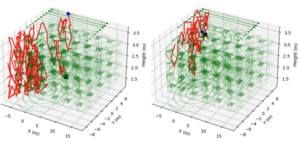
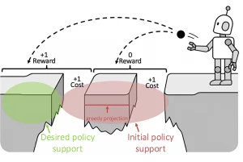
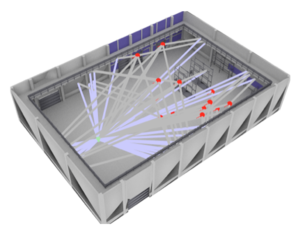
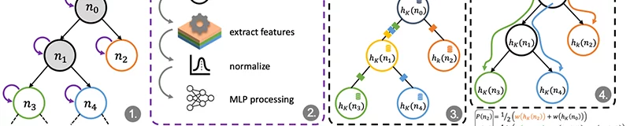

Alexander Mattick is a research scientist at Fraunhofer Institute for Integrated Circuits, where he pursues a PhD in Constrained Reinforcement Learning. He obtained a bachelors in Computer Science and a Master’s in Artificial Intelligence from Friedrich Alexander University, where he also previously worked on historical document analysis and recognition. He completed his master’s thesis on the topic “Reinforcement Learning for node selection in Branch-and-Bound” through Fraunhofer IIS, where he currently works in the group Self Learning Systems.
Research Interests
- Reinforcement Learning
- Constrained Reinforcement Learning
- Optimization
- Variational Bayesian Methods
Publications


SafeMPO: Constrained Reinforcement Learning with Probabilistic Incremental Improvement
We propose SafeMPO, a constrained reinforcement learning framework that incorporates safety constraints directly into the policy optimization process through safety-aware policy updates. By jointly optimizing task performance and constraint satisfaction, SafeMPO improves policy learning while reducing safety violations and maintaining strong overall performance.

Constrained Reinforcement Learning Using Successor Representations
We propose the Safe Deep Successor Representation (SafeDSR), a novel method that allows quick retraining of policies towards new cost structures. SafeDSR extends the Deep Successor Representation to Constrained Reinforcement Learning by introducing a single learnable weight matrix to decouple the learned value function across dynamics, rewards, and costs.


Optimizing quantum circuits via zx diagrams using reinforcement learning and graph neural networks
We introduce a framework based on ZX calculus, graph-neural networks and reinforcement learning for quantum circuit optimization. By combining reinforcement learning and tree search, our method addresses the challenge of selecting optimal sequences of ZX calculus rewrite rules. Instead of relying on existing heuristic rules for minimizing circuits, our method trains a novel reinforcement learning policy that directly operates on ZX-graphs, therefore allowing us to search through the space of all possible circuit transformations to find a circuit significantly minimizing the number of CNOT gates. This way we can scale beyond hard-coded rules towards discovering arbitrary optimization rules. We demonstrate our method's competetiveness with state-of-the-art circuit optimizers and generalization capabilities on large sets of diverse random circuits.

Simplicity is Key: An Unsupervised Pretraining Approach for Sparse Radio Channels
We introduce Sparse pretrained Radio Transformer (SpaRTran), a hybrid method based on the concept of compressed sensing for wireless channels. SpaRTran builds around a wireless channel model that constrains the optimization procedure to physically meaningful solutions and induces a strong inductive bias, cutting positioning error by up to 28% and increasing top-1 codebook selection accuracy for beamforming by 26 percentage points.

Reinforcement Learning for Node Selection in Branch-and-Bound
We train a graph neural network that produces a probability distribution based on the path from the model's root to its ``to-be-selected'' leaves. Representing node-selection as a probability distribution allows us to train a decision-making policy using state-of-the-art RL techniques that capture both intrinsic node-quality and node-evaluation costs.
Our method induces a high quality node selection policy on a set of varied and complex problem sets, despite only being trained on specially designed, synthetic travelling salesmen problem (TSP) instances.